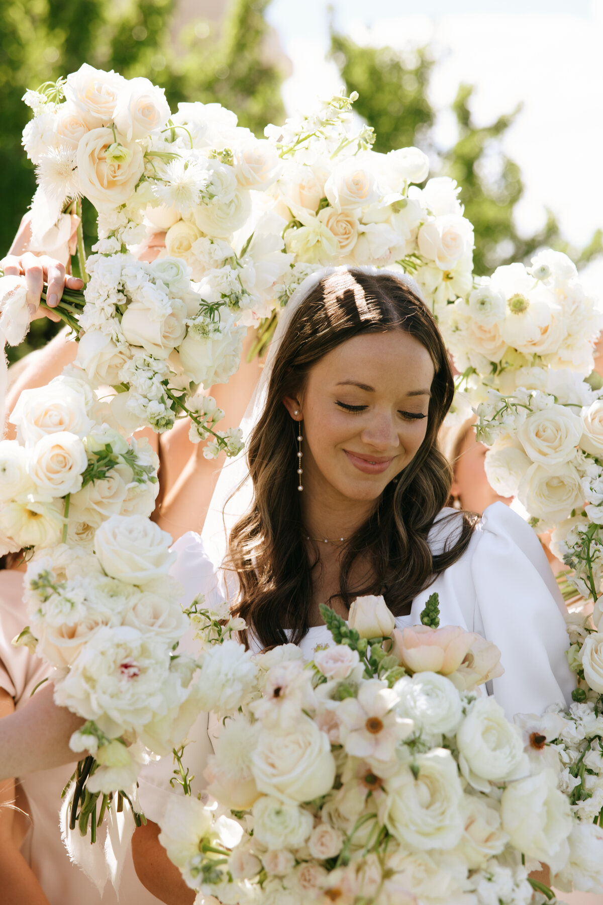
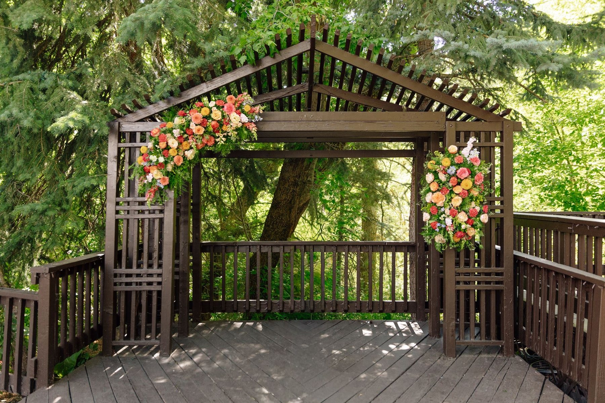
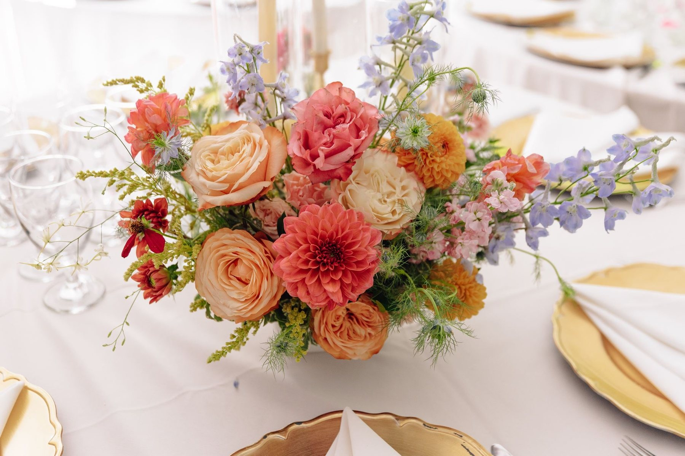

Florals that feel like poetry
Custom, garden-inspired florals designed by Alysha Jeppson in Alpine, Utah. Rooted in softness, whimsy, and just the right amount of floral magic.
Every arrangement tells a story, and your special day deserves florals as unique as your love. From intimate elopements to grand celebrations, we craft whimsical designs that capture the essence of your vision.
Inquire today
Organic, garden-fresh aesthetic for weddings and events
My approach begins with understanding your style, color palette, and the feeling you want to create. Whether you're drawn to wild, untamed bouquets bursting with seasonal blooms or prefer elegant, structured arrangements with delicate touches, each design is thoughtfully curated to reflect your personality and complement your venue.
Services offered
- Bridal bouquets - Handcrafted with love and attention to every petal
- Bridesmaids bouquets - Coordinated designs that complement without competing
- Ceremony arrangements - Altar pieces, aisle decor, and arch installations
- Reception centerpieces - From intimate tablescapes to statement arrangements
- Boutonnieres and corsages - Delicate accents for your wedding party
- Special event florals - Corporate events, sales kick-offs, fundraisers, and milestone celebrations

Let's build something beautiful
Tell me about your day
Share what you're dreaming up through the form below.